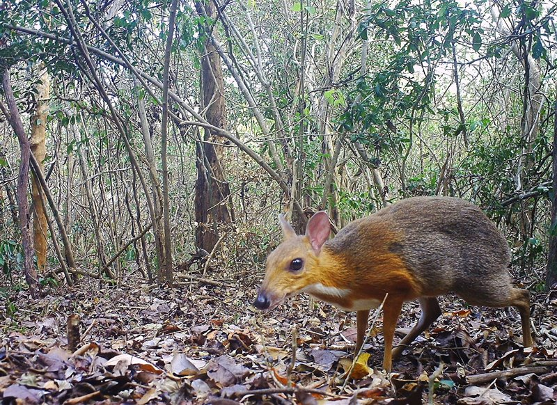

Desde que la vida surgió en la Tierra, su fauna se ha transformado en muchas ocasiones. Durante miles de años y por diversas razones, se han producido cinco grandes extinciones de las especies que han poblado la Tierra: son las conocidas como las cinco
extinciones masivas. En la actualidad, y debido a la acción de los seres humanos, el planeta está al borde de los que los científicos denominan la Sexta Gran Extinción. (Lista de especies afectadas en España, Mexico, Perú y el mundo). Pero, ¿es
realmente un problema tan grave? Para conocer a fondo el problema de la pérdida de biodiversidad se deben conocer distintos aspectos y conceptos clave para entender mejor a nivel biológico la cuestión:
En el siglo XIX, el naturalista Antonio Stoppani acuñó el término “antropozoico” para definir la época histórica marcada por el efecto de la humanidad en el planeta, principalmente a causa de la explotación masiva de recursos naturales: madera, metales
y minerales y, especialmente desde la Revolución Industrial, los combustibles fósiles. Eso ha llevado de forma paulatina, pero de forma mucho más acelerada en los dos últimos siglos, a la destrucción o reducción de muchos hábitats del planeta.
De hecho, según los científicos, la sexta extinción masiva ya está en marcha. Para ver un declive semejante de vida salvaje tendríamos que remontarnos a entre 10.000 y 15.000 años atrás, cuando el final de la era glacial llevó a la desaparición
de la megafauna, entre la que se encontraban mamuts, tigres dientes de sable y rinocerontes lanudos. En aquella ocasión, el impacto de los cazadores humanos ayudó a la debacle. Ahora, la acción directa de nuestra especie es el actor principal.
Según datos de la Unión Internacional para la Conservación de la Naturaleza, actualmente hay unas 5.200 especies en peligro de extinción, lo que supone el 25% de los mamíferos y anfibios, el 34% de los peces, el 20% de los reptiles y el 11% de las aves.
Pero estos datos solo incluyen a los animales vertebrados conocidos y aumentan cuando se extienden al conjunto de las especies vulnerables -aquellas que, sin considerarse en peligro de extinción, pueden entrar en esa categoría al haber sufrido
un rápido declive de la población o una pérdida de hábitat considerable. La desaparición de criaturas tan emblemáticas como los rinocerontes o los grandes felinos es evidente. Sin embargo, muchas otras no son tan conocidas pero juegan un papel
muy importante en los ecosistemas por su función polinizadora, porque sirven de alimento a otras especies o porque tienen una relación simbiótica con ellas. Son tan importantes porque su desaparición provoca el llamado efecto cascada: su extinción
o reducción masiva pone en peligro al resto del ecosistema.
Causas de que existan tantos animales en peligro de extinción
A la hora de buscar las causas de que haya tantas especies en peligro de extinción, los conservacionistas destacan como amenaza principal la destrucción y fragmentación de los hábitats: la sobrepoblación humana implica una mayor demanda de
terrenos para cultivar y criar ganado, reduciéndose los ecosistemas donde viven millones de animales. Esta destrucción también puede tener lugar de forma indirecta, ya que el cambio climático aumenta los incendios e inundaciones y modifica los
hábitats, a veces de forma drástica como sucede con la desertización de ciertas zonas del planeta.
En este aspecto, aquellas especies que solo viven en hábitats específicos, en ocasiones muy reducidos, son especialmente vulnerables. El incremento del nivel de los océanos pone en peligro islas que apenas emergen del mar y a su fauna endémica, como es
el caso de la rata cola de mosaico, un roedor en la lista de extinciones de 2019, que según Scientific American ostenta el triste honor de ser el primer mamífero oficialmente extinto por la acción humana a causa de la erosión del pequeño cayo
en el que vivía, al norte de Australia. A estas se suman otras causas como la llegada de especies invasoras -ya sea de forma accidental o intencionada-, que alteran la cadena trófica y pueden introducir enfermedades, la sobrepesca en el caso de
los animales marinos, la contaminación de los ecosistemas y, especialmente en el caso de los mamíferos, la caza: aquella practicada como “pasatiempo” y la que alimenta el mercado negro de la medicina tradicional. El cuerno de rinoceronte, las
placas del pangolín o los huesos de los grandes felinos son considerados a veces como remedios milagrosos, una creencia sin fundamento científico por la que alguna gente paga cantidades desorbitadas. Para terminar con la caza furtiva es tan importante
frenar la propia caza como evitar que exista una demanda de productos falsamente medicinales. Para ganar tiempo y evitar la reducción de las poblaciones de ciertos animales en peligro de extinción se han experimentado -con un éxito modesto- diversas
medidas disuasivas, como llenar los mercados de productos falsos o, en el caso de los rinocerontes, cortarles los cuernos antes de que los furtivos los cacen. Sin embargo, no se ha conseguido solucionar el problema.
Animales que se extinguieron en 2019
En 2019, veinticuatro especies fueron declaradas oficialmente extintas: cinco plantas, cinco peces, cuatro aves, cuatro mamíferos (incluyendo una subespecie de tigre y otra de rinoceronte), tres anfibios, tres reptiles y un invertebrado. Además, otras
muchas fueron consideradas extintas en libertad o “funcionalmente extintas”, lo que significa que es probable que se extingan al no haber suficientes individuos o hábitat para que la especie tenga posibilidades de procrear y sobrevivir. Según
el criterio de la Unión Internacional para la Conservación de la Naturaleza (UICN) para declarar una especie extinta, debe ocurrir que “no haya duda razonable de que el último individuo ha muerto”, es decir, no sólo que no haya habido avistamientos
en varias décadas sino que “los intentos continuados de inspeccionar el hábitat conocido de la especie no hayan dado como resultado avistamientos ni evidencias de su supervivencia”. Eso significa que una especie puede llevar muchos años extinta
antes de que se la declare como tal, y también que puede reaparecer tiempo después de que se la considerase desaparecida. Es precisamente lo que ocurrió en febrero de 2019, cuando reapareció el ciervo ratón (Tragulus versicolor), un mamífero del
sudeste asiático, que se consideraba extinto desde 1990.
